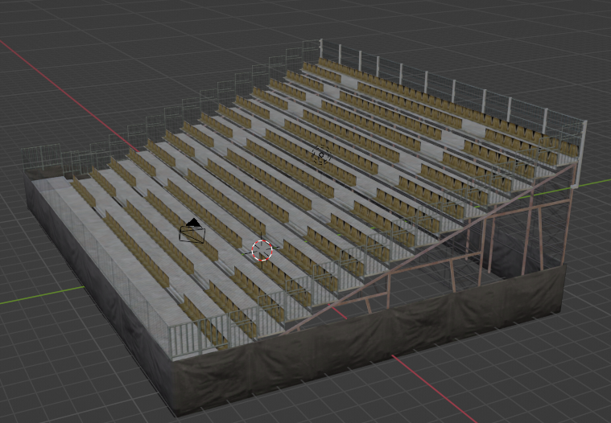
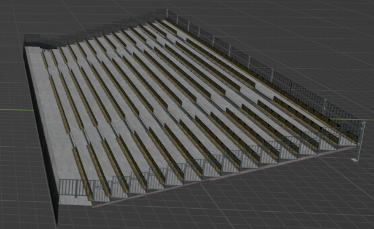
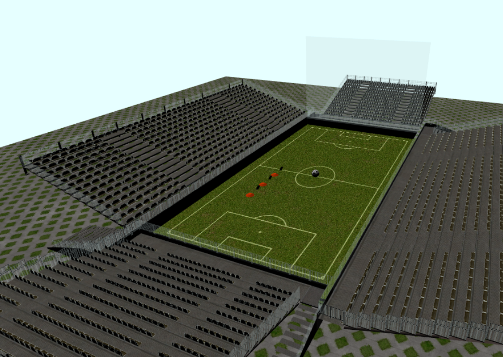

3D Soccer
Marco Benito Tomasone 1038815
Documentazione
3D soccer è un gioco sviluppato utilizzando Javascript e la libreria WebGL2. Questo progetto è stato sviluppato come progetto del corso di Computer Graphics dell'Università di Bologna ed è un progetto incentrato sulla grafica 3D.
All'inizio del gioco la palla si trova al centro dello stadio e nel campo appariranno tre cinesini che "agiranno da avversari" per la palla che
dovrà raccogliere tre cartellini gialli. Alla loro raccolta appariranno altri cinesini ed un arbitro che inseguirà la palla.
Ci sono due modi di perdere:
- Se la palla tocca un cinesino
- Se l'arbitro tocca la palla
Il gioco termina con vittoria se l'utente, dopo aver raccolto i tre cartellini gialli, riesce a scappare per 60 secondi dall'arbitro che lo inseguirà, evitando contestualmente tutti i cinesini nel campo.
Oggetti
Tutti gli oggetti sono stati creati o ritoccati utilizzando il software Blender. Escludendo gli spalti dello stadio, tutti gli oggetti sono stati creati da zero. Per quanto riguarda i gli spalti, questi sono stati trovati in rete. Essi però avevano un sistema di travi posteriore abbastanza complesso, che ho provveduto a eliminare per semplificarne i modelli tramite Blender. Qui a sinistra si può vedere la foto degli spalti originali e a destra la foto degli spalti modificati.


Tutti gli altri oggetti sono stati creati da zero su Blender, che è servito non solo a creare le mesh, ma anche ad applicare le texture sugli oggetti. Mostriamo ora una foto dell'intera scena, che vedrà come unico assente l'arbitro:

File JS
3D_Soccer
3D_Soccer.js è il main di questo progetto. Si occupa di inizializzare e setuppare l'intero gioco. Prima di tutto possiede delle funzioni per generare casualmente le posizioni dei vari oggetti. Verrà generata la posizione di un cartellino giallo a partire dal quale si calcoleranno le posizioni di altri due cartellini gialli e tre cinesini, per formare una sorta di percorso ad ostacoli. Successivamente si genereranno le posizioni di altri cinesini, controllando che non si sovrappongano a quelli già presenti. Il main inizializzerà poi uno Scene Handler e gestirà il ciclo di render principale. Infine, nel caso in cui si perda, si occuperà di gestire il rendering dell'immagine di game over e di setuppare l'handler per il click del mouse per far ricominciare il gioco.
Scene Handler
Lo Scene Handler è la classe che si occupa di fare e gestire il setup del gioco.
Prima di tutto, questa classe trovera i due canvas e inizializzerà su uno il contesto WebGL2 e sull'altro un contesto 2D (che verrà usato per il menù delle istruzioni e per il rendering della fine del gioco).
Infine il costruttore si occuperà di compilare gli shaders e inizializzare i vari componenti di cui è composto il gioco (camera, palla e arbitro) e settarne anche i listener per i loro comandi.
La funzione render dello scene Handler è quella che si occupa di gestire tutti i movimenti del gioco e di renderizzare i vari componenti. Inantitutto setta la dimensione del canvas alla dimensione del display e abiliterà trasparenze e profondità.
Muoverà poi la camera che calcolerà la nuova posizione della camera e controllerà tutta la lista degli obj e per ogni oggetto chiamerà la funzione render che si occuperà di renderizzare l'oggetto. Prima di renderizzarlo però, a seconda dell'oggetto applicherà delle trasformazioni differenti. Per palla e arbitro calcolerà la loro nuova posizione, per i cartellini gialli calcolerà una rotazione e nel caso ci siano camere particolari (come la camera posteriore o dall'alto) calcolerà anche la posizione della camera.
Obj Loader
ObjLoader è una classe fortemente basata su due tutorial di WebGLFoundamentals:
Questa classe si occupa principalmente di fare, come prevedibile, il parsing dei file.obj e .mtl che rappresentano gli oggetti del gioco.
Ha due metodi principali che sono proprio ParseOBJ e ParseMTL, scritti seguendo i due tutorial sopra elencati. Queste due funzioni parseranno i file (letti nella classe Object Class) e permetteranno di estrarre le informazioni necessarie. ParseOBJ ritorna una lista di geometries e una lista di materialLibs (geometrie della quale è composto un oggetto e relativi materiali). ParseMTL invece ritorna una lista di materiali.
Object Class
Ogni oggetto è un'istanza di questa classe Object Class, che possiede per ogni oggetto una serie di attributi come la posizione, la rotazione e la visibilità. La visibilità di un oggetto serve per scegliere se renderizzare o meno l'oggetto.
Anche questa classe è ispirata ai tutorial di WebGLFoundamentals elencati in ObjLoader.
Il costruttore di questa classe prende in input il path del file .obj e richiamando le funzioni della classe ObjLoader, ottiene tutto ciò che le serve per gestire una mesh.
Questa classe inoltre si occupa di renderizzare ogni singola mesh. Per farlo, infatti lo Scene Handler ha la lista di tutti gli .obj e richiama nel suo metodo render, il render per ogni singola mesh.
Camera And Lights
La classe Camera And Lights si occupa di gestire la camera e le luci del gioco.
La camera è inizialmente posta su una semisfera che si trova attorno allo stadio e tramite gli opportuni listener permette all'utente di muovere la camera. Inizialmente il target della camera sarà il centro (0,0,0) e la camera si muoverà attorno a questo punto. Si prevede però la possibilità di far si che la camera punti non più il centro, ma punti la palla e quindi la camera aggiornerà la sua inclinazione rispetto ai movimenti della palla. Sono state previste inoltre due camere particolari:
- Camera posteriore: la camera si trova dietro la palla e punta verso di essa
- Camera dall'alto: la camera si trova sopra la palla e punta verso di essa
In entrambe queste camere la posizione non è più modificabile dall'utente tramite gli input da mouse e touch ma sarà fissata rispetto alla posizione della palla.
Lo zoom della camera è gestito tramite uno slider che aumenta o diminuisce il FOV (campo visivo) della camera, questo fa si che la camera si avvicini o si allontani dal target della palla stesso.
La gestione delle luci viene fatta contestualmente alla camera e utilizzo le sharedUniform della camera per passare le informazioni delle luci. La posizione della luce è gestita tramite tre slider che modificheranno il valore della posizione della luce.
La luce è una luce : ????????????????????? TODO: completare
Ball
La classe Ball si occupa di gestire i movimenti e le collisioni della palla. Il funzionamento di questa classe è ispirato al codice car.js proposto dal Prof. Casciola.
Prima di tutto vengono settati dei listener per i movimenti della palla stessa, questi listener sono collegati ai tasti WASD altrimenti è previsto il movimento touch tramite un joystick nel caso in cui si stia utilizzando la versione mobile del gioco.
La libreria del joystick non è stata scritta da me, ma è stata utilizzata una libreria già pronta trovata in rete, sul profilo GitHub di bobboteck, alla quale ho modificato i colori. Per permettere movimenti in diagonale è prevista una keymap che associa ad ogni tasto una direzione e in base ai valori booleani della keymap si sceglie se dare o meno velocità alla palla in quella direzione. La palla ha tre vettori principali che ne determinano i comportamenti:
- Position: la posizione della palla
- Speed: la velocità della palla su quell'asse
- Rotation: la rotazione della palla in quell'asse
In base al vettore velocità della palla verrà calcolata la nuova posizione della palla e le verrà impressa una certa rotazione.
La più importante funzione che governa i comportamenti della palla è la collisionCheckerUpdate, che si occupa di controllare se la palla sta collidendo con gli oggetti del gioco. Prima di tutto controlla che con l'aggiornamento della sua posizione la palla non ecceda i bordi dello stadio, in caso positivo semplicemente la palla non eccederà il muro ma ruoterà contro il muro stesso. Poi vengono controllate le collisioni con i due tipi di oggetti presenti i cartellini gialli che verranno raccolti e i cinesini, che se toccati faranno perdere la partita. Per i cartellini gialli viene controllata la collisione con la palla e se la collisione è avvenuta, il cartellino viene rimosso dalla lista degli oggetti e viene aggiunto un punto al punteggio. Per i cinesini viene controllata la collisione con la palla e se la collisione è avvenuta, la partita viene terminata.
Refree
La classe Refree si occupa di gestire i movimenti dell'arbitro. L'arbitro apparirà solo dopo che l'utente con la palla ha raccolto tutti e tre i cartellini gialli posizionati all'interno del percorso con i cinesini. Al momento dello spawn dell'arbitro la sua posizione sarà fissata rispetto a quella attuale della palla. Da quel momento l'arbitro seguirà i movimenti della palla cercando di avvicinarsi ad essa e colpirla, ponendo fine al gioco. Questo è reso possibile aggiornando la posizione dell'arbitro in base alla posizione attuale della palla. L'arbitro è rappresentato da un cubo sul quale è applicata la texture della faccia dell'autore del progetto tramite gli algoritmi di UV mapping di Blender.